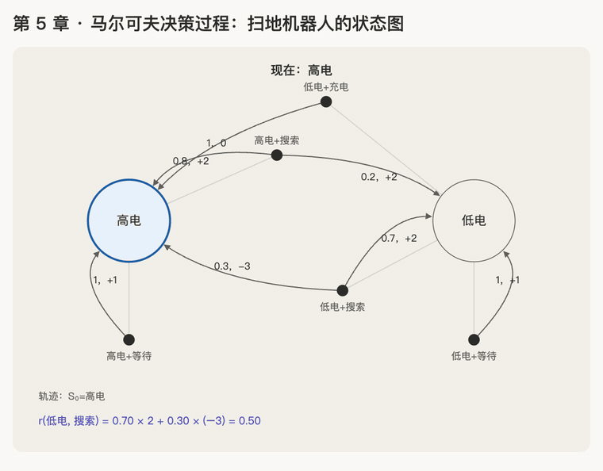

第 5 章 · 马尔可夫决策过程 MDP：环境的"说明书" p(s', r | s, a)
本章回答：环境怎么回应智能体的动作？能不能用一张表把环境完全写下来？"马尔可夫"是什么意思？
讲解日期：2026-11-13 · 上一章：第 4 章 概率与期望 · 下一章：第 6 章 策略
对应原文：Sutton & Barto §3.1 后半（L3581–L3660，式 3.2–3.6）、例 3.3 回收机器人（L3780–L3925）；CS 285 第 4 讲（lec-04.txtL15–L47）
本章缩写：MDP = Markov Decision Process（马尔可夫 / 决策 / 过程；Markov 是俄国数学家马尔可夫的名字）；\(p(s', r \mid s, a)\)：s' 读"s 撇"，表示下一个状态（next state）；POMDP = Partially Observable MDP（部分 / 可观测的 MDP）。全部缩写见 附录 · 缩写与术语表
讲解
第一步：扫地机器人：两个状态、三个动作（2026-11-13）
书里的例 3.3（L3780–L3800）是一个捡易拉罐的机器人。我们叫它扫地机器人，数字是讲义自己定的：
- 状态只有两种：电池高电、低电；
- 动作：搜索（到处找罐子）、等待（原地等人送罐子来）、充电（回去充电，只有低电时才可以选；高电时充电没意义，书里干脆不给这个选项）。
环境怎么回应：
| 现在 | 动作 | 结果 | 概率 | 奖励 |
|---|---|---|---|---|
| 高电 | 搜索 | 还是高电 | 0.8（书里叫 α） | +2 |
| 高电 | 搜索 | 变成低电 | 0.2 | +2 |
| 高电 | 等待 | 还是高电 | 1 | +1 |
| 低电 | 搜索 | 还是低电 | 0.7（书里叫 β） | +2 |
| 低电 | 搜索 | 没电了，被人抬回去充满 → 高电 | 0.3 | −3 |
| 低电 | 等待 | 还是低电 | 1 | +1 |
| 低电 | 充电 | 变成高电 | 1 | 0 |
看懂这张表：同一个"现在 + 动作"，结果可能不止一种（搜索时电可能掉、可能不掉），每种结果有自己的概率和奖励。这就是环境的随机性。
一句话：环境 = 一张表：在什么状态、做什么动作，会以多大概率到哪个新状态、拿多少奖励。
第二步：把这张表写成一个函数 \(p(s', r \mid s, a)\)（2026-11-13）
书里把上面那张表写成一个函数（式 3.2，L3589–L3590）：
一个个符号读：
- \(s, a\)（竖线右边）：已知的：上一步的状态和动作；
- \(s', r\)（竖线左边）：要猜的：下一个状态 s'（读"s 撇"）和这次的奖励 r；
- 整个式子：在"状态 s、做了动作 a"的条件下，"到 s'、拿 r"的概率（第 4 章第四步的条件概率）。
对照表格读几个值：
- \(p(\text{高电}, +2 \mid \text{高电}, \text{搜索}) = 0.8\)
- \(p(\text{低电}, +2 \mid \text{高电}, \text{搜索}) = 0.2\)
- \(p(\text{高电}, -3 \mid \text{低电}, \text{搜索}) = 0.3\)
铁律（式 3.3，L3615–L3617）：固定一组 \((s, a)\)，所有可能的 \((s', r)\) 概率加起来 = 1。"高电 + 搜索"：0.8 + 0.2 = 1 ✓；"低电 + 搜索"：0.7 + 0.3 = 1 ✓。
这个 p 叫做 MDP 的动力学 dynamics（L3594）：它把环境怎么运转完全写清楚了。
一句话：\(p(s', r \mid s, a)\) 就是那张表：已知 s 和 a，到 s'、拿 r 的概率；每组 (s, a) 加起来是 1。
第三步：马尔可夫性质：只看现在，不用翻历史（2026-11-13）
问题：机器人现在低电。它下一步会怎样，要不要知道它昨天做了什么？
马尔可夫性质 Markov property（L3621–L3628）：下一步的概率只取决于现在的状态和动作，跟更早的历史无关。
类比：下棋。 你接手一盘下到一半的棋，只看现在棋盘上的局面就能决定下一步怎么走，不需要知道前面每一步是怎么下出来的：棋盘已经把有用的历史都"记"在里面了。
| 是马尔可夫的状态 | 不是 | |
|---|---|---|
| 下棋 | 整个棋盘 | 只看自己的棋子 |
| 开车 | 位置 + 速度 | 只有位置（不知道在往哪开） |
| 机器人 | 电量（在我们的简化例子里够了） | — |
原文 L3624–L3627 说得很准：这其实是对状态的要求，状态必须包含"过去对未来有影响的一切信息"。如果状态信息不全（开车只知道位置），就要把它补全，或者当成"部分可观测"的问题（CS 285 第 4 讲 L37 的 POMDP，本书后面不展开）。
有了马尔可夫性质，p 才够用：只要知道现在的 (s, a)，p 就能告诉你下一步的一切；不需要一张"按历史查"的大表。
一句话：马尔可夫 = 现在的状态已经说明了一切，未来只看现在，不翻历史。
第四步：从 p 算出两个常用的量（2026-11-13）
p 有四个参数，有时用起来嫌啰嗦。书里从它派生出两个简化版：
① 只关心到哪：状态转移概率（式 3.4，L3633–L3640）：把所有奖励的情况加起来：
例："低电 + 搜索"到高电只有一种奖励（−3），所以 \(p(\text{高电} \mid \text{低电}, \text{搜索}) = 0.3\)。
② 只关心拿多少：期望奖励（式 3.5，L3643–L3649）：按概率加权平均奖励（第 4 章的期望）：
算两个：
看出门道了吗：高电时搜索平均拿 2；低电时搜索平均只拿 0.5，因为有 30% 的概率没电、被罚 −3。这就是机器人要学会的权衡：低电时还值不值得冒险搜索？（第 9 章给出答案。）
一句话：把奖励加掉得到 \(p(s' \mid s, a)\)；按概率平均奖励得到 \(r(s, a)\)。
动画演示：机器人状态图：箭头上写着概率和奖励

可交互版：animations/l05-mdp.html（要能点按钮、拖滑块，需要用本地服务打开，见 animations/README.md"跑起来看"）。
怎么看：
- 两个大圆是状态（高电、低电），小黑点是"状态 + 动作"；
- 每条箭头标着"概率，奖励"：从同一个小黑点出发的箭头，概率加起来是 1（第二步）；
- 播放时机器人按表格随机走，下面记下轨迹和奖励；
- 滑块调 β（低电搜索后还是低电的概率），看 \(r(\text{低电}, \text{搜索})\) 怎么变（第四步）。
练习与作答记录
题 1：按第一步的表，写出 \(p(\text{低电}, +2 \mid \text{低电}, \text{搜索})\) 和 \(p(\text{高电}, +1 \mid \text{高电}, \text{等待})\) 各是多少。
作答：（待作答）
题 2：算 \(r(\text{低电}, \text{等待})\) 和 \(r(\text{低电}, \text{充电})\)。
作答：（待作答）
题 3：一个机器人走迷宫，状态只给"我在第几行"，不给"在第几列"。这个状态满足马尔可夫性质吗？为什么？
作答：（待作答）
口诀
环境是张表：哪个状态做哪个动作，以多大概率到哪、拿多少；
竖线右边已知，左边要猜，每组加起来等于一；
马尔可夫：现在说明一切，不翻历史；
加掉奖励得转移，平均奖励得 r(s, a)。
本章复习卡片
- R08（动力学 \(p(s', r \mid s, a)\) 的读法；每组 (s, a) 概率和为 1）
- R09（马尔可夫性质；从 p 派生 \(p(s' \mid s, a)\) 和 \(r(s, a)\)）
附录 · 延伸阅读
留给以后深入学习用，不影响本章主线。★ 是建议先读的。L 行号指
materials/text/books/sutton-barto-RLbook2020.txt。
推荐阅读
| 读什么 | 读哪里 | 读它为了什么 |
|---|---|---|
| ★ Sutton & Barto §3.1 后半 | L3581–L3649（式 3.2–3.5） | 动力学 p、马尔可夫性质、派生量 |
| ★ Sutton & Barto 例 3.3 | L3780–L3925 | 回收机器人原题：书里用 α、β、\(r_{search}\)、\(r_{wait}\) 这些字母；习题 3.4 让你把它写成 \(p(s', r \mid s, a)\) 的表 |
| CS 285 第 4 讲 | lec-04.txt L15–L47 |
Markov chain → MDP → POMDP，课程版的定义（Levine 把转移写成 \(p(s_{t+1} \mid s_t, a_t)\)，记号略不同） |
| Sutton & Barto §17.3 | 书第 17 章 | 状态不满足马尔可夫时怎么办（想深入再读） |
| 王树森 slides | chinese/wangshusen-DRL/Slides/1_Basics_1.pdf |
中文：状态转移、随机性来自哪 |
数学原理
- 联合概率求边缘：\(p(s' \mid s, a) = \sum_r p(s', r \mid s, a)\)：把不关心的那个变量的所有取值加起来（marginalize，边缘化）。
- 期望奖励：\(r(s, a) = \sum_{s', r} r\,p(s', r \mid s, a)\)，就是第 4 章"值 × 概率再相加"。
- 马尔可夫性质：\(\Pr(S_{t+1}, R_{t+1} \mid S_t, A_t, S_{t-1}, A_{t-1}, \dots) = \Pr(S_{t+1}, R_{t+1} \mid S_t, A_t)\)：条件里多写历史，概率不变。
- CS 285 的写法：MDP 常写成五元组 \((\mathcal S, \mathcal A, p, r, \gamma)\)：状态集合、动作集合、转移、奖励、折扣。
公式清单
| 公式 | 意思 |
|---|---|
| \(p(s', r \mid s, a) = \Pr\{S_t = s', R_t = r \mid S_{t-1} = s, A_{t-1} = a\}\) | 动力学（式 3.2） |
| \(\sum_{s'}\sum_r p(s', r \mid s, a) = 1\) | 每组加起来是 1（式 3.3） |
| \(p(s' \mid s, a) = \sum_r p(s', r \mid s, a)\) | 状态转移概率（式 3.4） |
| \(r(s, a) = \sum_r r \sum_{s'} p(s', r \mid s, a)\) | 期望奖励（式 3.5） |
代码对照：把本章的数字用代码算一遍
代码在
cs285-deep-rl/solutions/chapter-code/ch05_mdp.py（环境定义在rl_envs.py的robot_mdp()），测试tests/test_ch05_09.py。
同一章的 Jupyter notebook：cs285-deep-rl/solutions/chapter-code/notebooks/ch05_mdp.ipynb（讲解和代码放在一起，一格一格边读边跑；代码都写在格子里，Colab 也能直接打开）。
bash cd cs285-deep-rl/solutions/chapter-code uv run python ch05_mdp.py
| 讲义 | 代码 | 跑出来 |
|---|---|---|
| 那张表 | P[s][a] = [(概率, 下一个状态, 奖励, 是否结束), ...] |
打印 5 组 |
| 每组加起来是 1 | check_sums(P) |
全是 1.0 |
| \(p(\text{高电} \mid \text{低电}, \text{搜索})\) | transition_prob(P, 1, 0, 0) |
0.30000000000000004 |
| \(r(\text{低电}, \text{搜索})\) | expected_reward(P, 1, 0) |
0.5 |
代码里才看得到的：
P[s][a]这种"字典套列表"的写法，和 Gymnasium 里 FrozenLake、Taxi 等环境的env.unwrapped.P完全一样，以后可以直接拿来跑第 10–12 章的算法；1 − 0.7在电脑里算出来是0.30000000000000004：小数在电脑里存不精确，比较概率时要用"差不多相等"（测试里的pytest.approx），别用==。